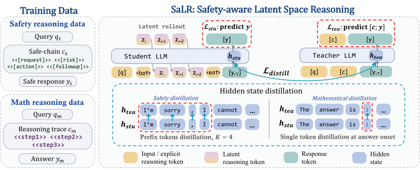

↗关于我
Hi, I'm Hongye Qiu. I'm pursuing a master's degree in Electronic Information at ShanghaiTech University and interning as an AI engineer at MetaX Integrated Circuits. My current focus is primarily on RSI and operator optimization. I also play table tennis and welcome friendly matches in Shanghai. 🏓
论文与研究.
经历.
2025.07 — 至今
MetaX 集成电路
AI 工程师实习生
2024.09 — Present
上海科技大学
电子信息专业 · 硕士
2021.07 — 2023.03
中电福富
算法工程师
2017.09 — 2021.06
福州大学
电子信息工程专业 · 学士
荣誉与奖项.
2026上海市第十八届运动会乒乓球高校组女子双打第八名
2021福州大学乒乓球联赛团体第一名
2019福州大学优秀学生干部
2018福州大学优秀共青团干部